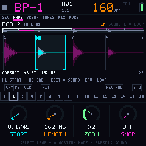
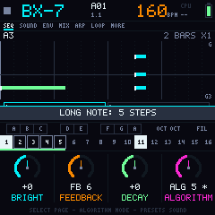
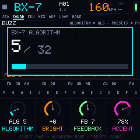
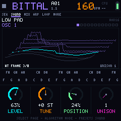
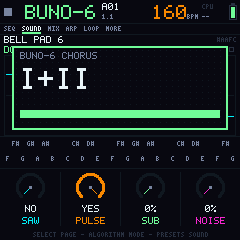
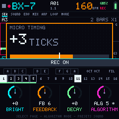

Firmware libre para tu M-VAVE FM-1
Convierte el FM-1 en una groovebox de directo con seis máquinas: batería, sampler de pads, bajo, FM, wavetable y un polifónico con chorus, cada una con su propio largo y su propia velocidad. Código libre, con licencia GPL-3.0.

La pantalla de 240×240, tal cual
Estas son capturas reales del firmware, generadas por las pruebas automáticas. La pantalla viene en inglés; el español es un paquete de idioma que se carga aparte.







Seis máquinas para tocar en vivo
Todo pensado para los controles del FM-1: tres perillas grandes, cuatro pequeñas, catorce botones y 27 teclas con LED.
BR-8
Batería modelada (808, 909 y SINTE), calculada en vivo. Acento, repetición, flam, P-Locks por paso y pasos que solo suenan en el fill.
BP-1
16 pads hechos con tus tomas, como en un KO II o un OP-1 field, con loop de sustain y BREAK para variar la rejilla compás a compás.
BB-303 · B-MINI
Bajo ácido con slide y acento, o tres osciladores con filtro escalera. Se cambia con una perilla y las notas se quedan.
BX-7 · BITTAL · BUNO-6
FM de 6 operadores con bancos .syx, wavetable que carga presets de Vital y un polifónico con chorus. 37 sonidos de fábrica y los tuyos.
Mezclador BX-1
Volumen, envío a la reverb, filtro del master y BEAT FX. Cuatro gestos por botón; HOME sostenido es el controlador en cualquier pantalla.
Escenas y efectos
REC expresivo, cuatro escenas con cadenas y grabación de la canción, fills automáticos, reverb, delay y 16 efectos punch-in.
Todo lo que rodea al firmware
Bubba Machine no es solo un archivo para flashear. Esto es lo que ya existe y lo que viene.
Emulador web
El firmware completo en el navegador, compilado a WebAssembly. Sin instalar nada.
Abrir el emuladorFirmware para el FM-1
Corre en el aparato desde la 0.4.0-beta y se instala plug and play desde el navegador. Probado en un solo FM-1; una actualización puede borrar lo guardado.
InstalarCalidad de audio
44.1 kHz de punta a punta, mezcla en coma flotante y sonidos calculados en vivo. Qué se mejoró, cuánto cuesta y qué falta.
Los detallesDiseño 0.6
Seis máquinas fijas, una cara nueva y el banco de sonidos, sobre la interfaz 3.0: cuatro gestos por botón y HOME en todas partes.
Por qué es asíEditor de sonidos
Presets de Vital y bancos .syx de la DX7, convertidos en el navegador y mandados al FM-1 por USB.
Abrir el editorTuyo para estudiarlo, cambiarlo y compartirlo
Bubba Machine se publica bajo la GNU General Public License v3.0 o posterior.
- Código propio, escrito desde cero. De la ingeniería inversa pública del FM-1 solo se usaron hechos de hardware. Créditos.
- Sonidos calculados en vivo. El firmware no lleva audio grabado de terceros; los presets de la comunidad del banco tienen licencia libre y su crédito.
- Siempre con su fuente. Cualquier versión que se distribuya, incluidas las modificadas, tiene que publicar su código.
- Probado. Más de 600 comprobaciones automáticas corren en cada cambio.